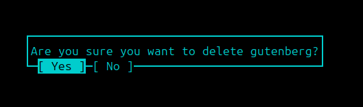

Message boxes in lazywp
I pushed my current state into the main branch of lazywp. It doesn’t seem like much but I can now trigger a message box with a simple command and have an option to answer yes and no questions.
|  |
|---|
| Messagebox in lazywp with a yes / no option |
It’s not much, but I am a step closer to more implementations. Currently it’s possible to toggle activation, updating and deleting plugins. The next step is to create an installation prompt for new plugins. I think after that I will implement the help page which dynamically fetches the information from the commands.